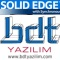

Solid Teknoloji
(22-12-2009) |
SolidWorks-SolidCAM'de Kampanyalar... |
|
Egemen Bilgisayar
(21-12-2009) |
MuhendisPC.com firma tanýtýmý... |
|
TEKYAZ
(17-12-2009) |
Artýk eðitim DVD'si beklemeye son;
TEKYAZ ile anýnda tüm videolara ulaþýn...
Üstelik ücretsiz!.. |
|
Yenasoft
(14-12-2009) |
Yenasoft 2010 Eðitim DVD'si çýktý! Hem de ücretsiz!.. |
|
SAYISAL GRAFÝK
(08-12-2009) |
3 Boyutun Ötesine Geçin; Autodesk Sayýsal Modelleme Çözümleri
23 Aralýk 2009, Divan Otel Asia |
|
Sahibinden
(18-11-2009) |
Satýlýk, 3 boyutlu renkli yazýcý: Z Corp. Spectrum Z510 Full Color System... |
|
| |
|
|
| (17-11-2009) |
Tam teþekküllü ve full kapasiteli kalýphaneye kalýpçý ortak aranýyor... |
|
Ýnformatik A.Þ.
(12-11-2009) |
Karmaþýk parçalarý NCG CAM ile kolaylýkla iþle
Zamanýný koru, Paraný koru, Kârlýlýðýný artýr... |
|
Çað CAD/CAM
(04-11-2009) |
Tüm DELCAM kullanýcýlarýmýzý sürprizlerle dolu PowerMILL 10 semineri için 12 Kasým 2009'da GRAND CEVAHÝR HOTEL'e davet ediyoruz...
Yoðun talep üzerine kayýt süremizi uzattýk!.. |
|
Teknolojik Yazýlýmlar
(03-11-2009) |
SolidWorks Toplantýsý'na son 11 gün!..
14 Kasým 2009, Grand Cevahir Otel, Ýstanbul |
|
Hexagon Metrology
(03-11-2009) |
Kalite'09 Fuarý'nda standýmýza bekliyoruz;
Fuar avantajlarýný kaçýrmayýn!.. |
|
BDT Yazýlým
(23-10-2009) |
Sac metal dünyasýna Solid Edge açýnýmý!..
Solid Edge with Synchronous Technology 2 ile sac metal tasarým ve üretim hýzýnýzý yükseltin. Pazara ilk siz çýkýn, kârlýlýðýnýzý artýrýn!.. |
 |
Üçüncü Binyýl
(20-10-2009) |
Plastik Enjeksiyon Kalýpçýlýðý Kursu baþlýyor;
SolidWorks, SplitWorks, MoldWorks, ElectrodeWorks ve SolidCAM eðitimleri... |
|
MTM Eðitimleri
(07-10-2009) |
AutoCAD öðrenmenin en iyi yolu: AutoCAD Dersler... |
|
DMG / MORI SEIKI Turkey
(29-09-2009) |
DMG / MORI SEIKI TURKEY resmi açýlýþ ve Teknoloji Günleri daveti
(30 Eylül - 3 Ekim 2009) |
|
Teknolojik Yazýlýmlar
(11-09-2009) |
TEKYAZ'dan yine bir ilk!...
SolidWorks 2010 Türkçe videolarý
Türkçe dinleyin!.. |
|
Yenasoft
(02-09-2009) |
SolidWorks 2010'a ait yeni özelliklerin videolarýný Yenasoft farký ile izleyin; Gördüklerinize inanamayacaksýnýz!.. |
|
Sahibinden
(20-08-2009) |
Satýlýk, az kullanýlmýþ Roland MDX-40 masa üstü CNC freze tezgahý... |
|
BDT Yazýlým
(18-08-2009) |
Herkes ne zaman CAD kullanabilecek?
Solid Edge with Synchronous Technology ile düþünce hýzýnda, x100 kata kadar hýzlý tasarým yap!.. |
|
Teknolojik Yazýlýmlar
(17-06-2009) |
Teknolojik Yazýlýmlar, Uluslararasý SolidWorks Sertifikasyon Günleri'ni baþlatýyor... Siz de SolidWorks bilginizi uluslararasý sertifikalarla belgelendirmek istemez misiniz?.. |
|
Masaüstü CNC
(05-06-2009) |
Ekonomik masaüstü CNC arayanlara müjde; Yeni A-200 ile tanýþýn... |
|
TECHNOINVENT
(28-05-2009) |
Yeni Ürün Geliþtirme Eðitimi, 16 - 17 Haziran 2009, Ýstanbul |
|
Teknolojik Yazýlýmlar
(26-05-2009) |
Makine tasarýmýnda vites yükseltin; SolidWorks CAD yazýlýmý
SolidWorks'ün makine imalatçýlarýna özel hazýrlamýþ olduðu video ile üretimin nasýl daha verimli olabileceðini yakýndan izleyin... |
|
Yenasoft
(07-05-2009) |
Ücretsiz SolidWorks Eðitim DVD'si;
Hayalinizdekini kaðýda dökmeniz için SOLIDWORKS'ün saðladýðý kolaylýða, bir katký da YENASOFT'dan... |
|
Mikro Sert Metal
(05-05-2009) |
frezeci.com > kaliteli ve ekonomik karbür freze tedariki için ilk adresiniz... |
|
Masaüstü CNC
(27-04-2009) |
Küçük ve güçlü CNC freze tezgahý arayanlar; Masaüstü CNC'ye uðradýnýz mý?.. |
|
Hexagon Metrology
(27-03-2009) |
HEXAGON METROLOGY Türkiye, Bursa merkez binasýndaki,
PC-DMIS ölçüm yazýlýmý kullaným ve ileri seviye eðitimlerine davetlisiniz... |
 |
Üçgen Yazýlým
(10-03-2009) |
Unigraphics NX6 CAD kurslarýmýz baþlýyor;
TurkCADCAM üyelerine özel %10 indirim fýrsatýný kaçýrmayýn... |
|
Ýnformatik A.Þ.
(12-02-2009) |
Pro/ENGINEER Manikin ergonomi analizi çözümleri:
Pro/ENGINEER Manikin'i kullanarak ürünler ve çalýþma alanlarý ile kullanýcý arasýndaki etkileþimleri simüle edebilir ve analizini yapabilirsiniz... |
 |
Ýnformatik A.Þ.
(05-02-2009) |
Savunma Sanayi Semineri
19 Þubat 2009 Perþembe, 13:00-17:30
ODTÜ Makina Mühendisliði Bölümü E200 Salonu, Ankara |
|
Hexagon Metrology
(27-01-2009) |
HEXAGON METROLOGY Türkiye, Bursa merkez binasýndaki,
PC-DMIS ölçüm yazýlýmý kullaným ve ileri seviye eðitimlerine davetlisiniz... |
|
Mikro Sert Metal
(20-01-2009) |
Karbür takým bilemede kriz aþýsý... (indirim kampanyasý) |
|
ORSASistem
(19-01-2009) |
Yeni Dell Precision M6400 Covet / Dell M4400 / Dell M2400 iþ istasyonlarý... |
|